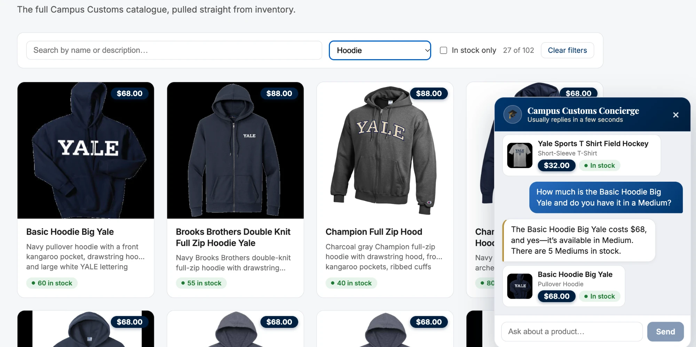
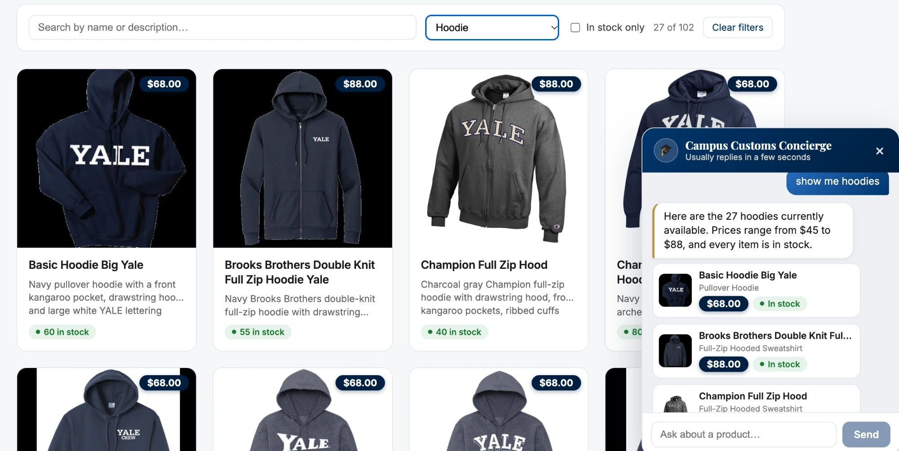
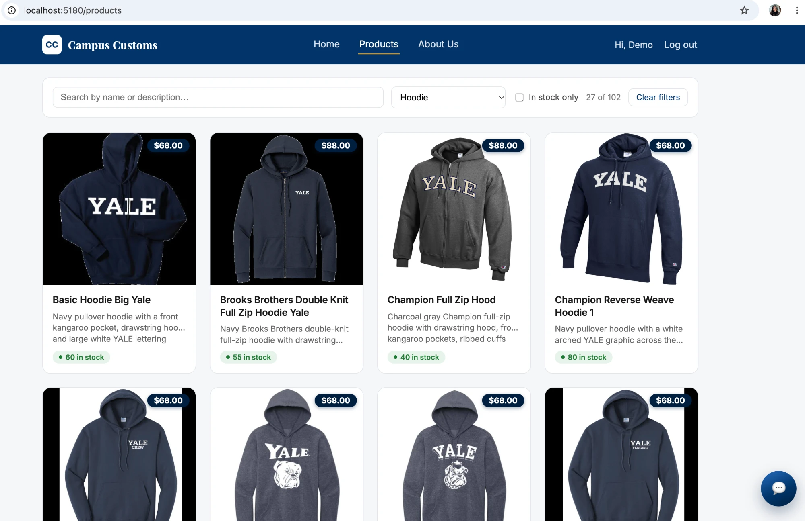

1Chat: honest stock & price from the database
Asked the chat widget about the Basic Hoodie Big Yale's price and Medium availability.

What this proves: the assistant answered "How much is the Basic Hoodie Big Yale and do you
have it in a Medium?" with "The Basic Hoodie Big Yale costs $68, and yes—it's available in
Medium. There are 5 Mediums in stock," which matches catalogue.price (68.0) and
inventory.quantity for size M (5 units) exactly — the reply is grounded in the live database, not
a guess.
2Dynamic product cards from a category search
Asked the chat widget "show me hoodies" and let it render the resulting product cards.

What this proves: the category question triggered search_products("hoodie") and
the assistant replied "Here are the 27 hoodies currently available. Prices range from $45 to $88, and
every item is in stock," rendering all 27 as clickable product cards (image, name, price, stock pill)
— not just the handful that happen to be literally labeled "hoodie" in the database — and each card links
straight to that product's detail page.
3Usability feature: live filter & count bar (Problem 9)
Selected "Hoodie" from the Products page's category dropdown and watched the result count update instantly.

What this proves: the client-side search/filter bar built in Problem 9 narrows the grid instantly with no network request, and the normalized category layer added afterward means selecting "Hoodie" correctly shows 27 of 102 products — every hooded garment regardless of its raw database label — rather than the 5 it would have shown before that fix. The screenshot also shows the logged-in nav state ("Hi, Demo") and the chat launcher, confirming this was captured from the actual running app, not a mockup.